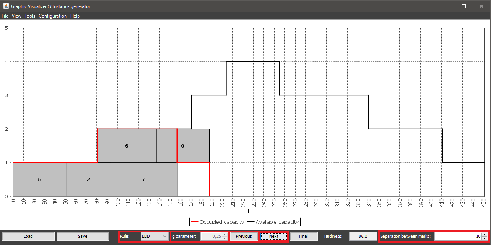

To perform a step by step scheduling you can use the Previous and Next buttons at the bottom of the main window, and select a rule in the drop-down, marked with the Rule label at the left bottom corner of the window.
The option to modify the g parameter is only enabled when the chosen rule is ATC, and it allows you to chose values between 0.01 and 1.
You can also modify the numeric value specified next to the Separation between marks label to choose which separation between graduation marks you want to display as you schedule the instance.
Everytime a new task is scheduled the tardiness value, displayed at the bottom right corner of the main window, will be updated.